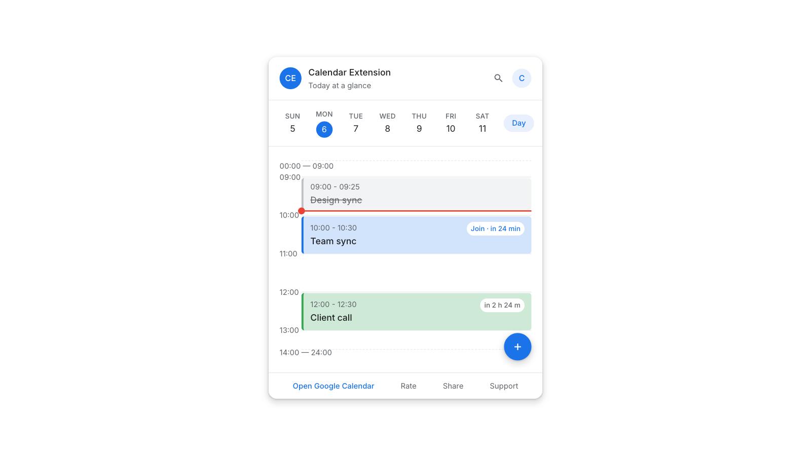

The translation test
A goal is calendar-ready when you can answer three questions: What is the weekly time quota? (hours, not vibes), what does a session produce? (a unit of progress you can name), and what existing time does it displace? That last one is where most goals die silently — a calendar is a zero-sum budget, and a goal that names no sacrifice is a wish wearing a deadline.
Example translation: "Improve our documentation" → 3 hours/week → each session drafts or revises one doc section → displaces half of Friday’s review block plus one Tuesday meeting slot being declined. Now it can be scheduled; before, it could only be believed in.
Placing goal blocks that survive
- Name blocks by output, not goal: "Draft onboarding doc §3", not "Documentation goal". Output names make skipping feel concrete ("§3 won’t exist") and starting easier (the session pre-decided its task).
- Two blocks of 90 beat five of 35. Goal work is usually deep work; fragments pay re-entry costs that quotas on paper don’t show.
- Attach, don’t float: pin goal blocks to stable anchors — right after the Monday sync, first thing Thursday. Blocks placed in "whenever looks free" get eaten first.
- Mark them Busy and give them the same rank as meetings. A goal block you’d move for any invite is a decoration with a title.
The weekly loop: quota vs. actual
During Friday’s reset, score one line per goal: planned hours / held hours / units produced — "3 / 2 / §3 drafted". Thirty seconds, and it converts drift into data while the week is still warm. Two consecutive weeks below half-quota triggers a decision (not guilt): shrink the quota to something real, upgrade the displacement (what bigger thing gets declined?), or retire the goal honestly. A retired goal costs nothing; a zombie goal costs a weekly ritual of self-blame.
Where Google Calendar’s "Goals" feature fits
The mobile app’s Goals feature (set a target like "run 3× a week"; it auto-places sessions and reschedules when conflicts arise) is built for habit-shaped personal goals — exercise, reading, a language. It is the right tool exactly there: low-stakes placement, automatic retries, gentle nagging. For work goals it misfires: auto-placed blocks land without displacement decisions, which re-creates the original failure with better UX. Work goals want the manual protocol; life habits can take the robot.
Quarter math, honestly
A quarter is ~13 weeks; with holidays, fires, and sick days, plan on 10 effective weeks. A 3-hour weekly quota is therefore a ~30-hour quarterly investment — enough for a meaningful artifact, nowhere near "transform the department". Sizing ambitions to 30 real hours up front beats discovering the arithmetic in week 11. One goal per quarter scheduled this way ships; three goals sharing the same peak hours negotiate against each other until none does.
Goal blocks die by drive-by scheduling — the invite that lands on Thursday 9:00 because it "looked open". Catching those the hour they arrive is what a toolbar view like Calendar Extension for Google Calendar™ makes cheap: new events surface next to the day’s protected blocks, while the polite decline is still easy.
Frequently asked questions
At 2–3 hours of protected quota each: two for most calendar-heavy roles, three if your meeting load is light. The constraint is peak-hours supply, not enthusiasm — goals scheduled into trough hours technically fit and practically underdeliver.
Recur the containers, refresh the contents: a standing Thursday 9:00–10:30 slot, retitled each Friday with next week’s specific output. Recurrence defends the territory; retitling keeps sessions pre-decided instead of generic.
That is a policy, not a project — it needs triggers, not blocks. Calendar’s contribution is indirect: two daily 30-minute "client pass" boxes make the policy structurally achievable. Translate policies into recurring boxes; translate projects into quota blocks.
Only for practice-shaped goals (language, instrument) where frequency beats depth. Production-shaped goals (write, build, analyze) compound within sessions — the 90-minute rule — so twice-weekly deep blocks outproduce daily 25-minute visits at the same total hours.